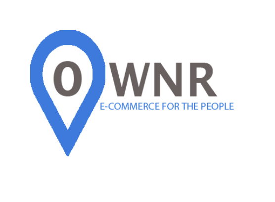

Innovation 3010
Ownr.US Team
Team Lead: Jacob Howell
Team Members: Connor Hall, Ahmad Najee-Ullah, Taylor Vasquez
Jeff Dempsey, the owner of Ownr.us, has created Ownr.us to bring a co-op style, user owned, multi-vendor marketplace to the ecommerce space. The goal is to build an enormous online marketplace that gives the people more ownership to the ongoing, massive retail e-commerce shift. Throughout the 5-month project, Mr. Dempsey had been assisted by the Ownr.us innovation team in projects related to researching ecommerce platforms, researching crowdfunding platforms, creating color schemes and logo ideas. The team started by focusing the research on an ecommerce platform that would meet the required features for Ownr.us. Some of the features that were required by the client were a social aspect and a mobile aspect. The social aspect gives the client the ability to allow users to post, like, and share the experience that was felt using the client’s website. The mobile aspect gives the client the ability to allow users to buy on the go and vendors to manage a store on the go. While researching into many ecommerce platforms, the team found that there were two suitable platforms that meet the requirements. The platforms that the team recommended to the client were Yo-Kart and My Marketplace Builder. With the recommended ecommerce platforms in mind, the team shifted the research to crowdfunding to help the client find a platform to raise money for their website.
Please clink the icon below to access the Report that has all information about what was accomplished for the Ownr.US Team.